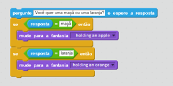
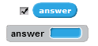

Relata de entrada de teclado do uso mais recente de 

O bloco faz uma pergunta e guarda a resposta introduzida pelo teclado em . A resposta é compartilhada entre todos os atores
Se quiser salvar a resposta atual, você pode guardá-la em uma variável ou em uma lista. Por exemplo,
Para ver o valor da resposta, clique na caixa de seleção junto do bloco de resposta.
